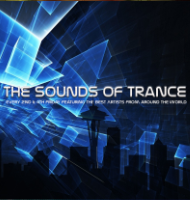
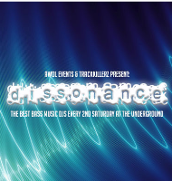
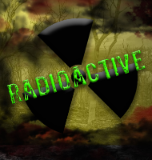

EVENTS

Seattle Trance Alliance
Seattle Trance Alliance was formed to help grown Trance in the Seattle area. A collaboration of djs, artists, producers and promoters working together to help unify the trance community. STA is: MarQ https://www.facebook.com/Officialdjmarq Digital Ascension https://www.facebook.com/digitalascension Web https://www.facebook.com/theDJWEB Invincity https://www.facebook.com/invincityofficial/ Johnny Monsoon https://www.facebook.com/J.Monsoon/ Chris Herrera https://www.facebook.com/ChrisHerreraMusic/ Sean and Xander https://www.facebook.com/SeanandXander Frequent Flyer Miles https://www.facebook.com/FrequentFlyerMiles/ Gotek https://www.facebook.com/djgotek/ Cartographerhttps://www.facebook.com/cartographer.seattle Derrick G https://www.facebook.com/djderrickgennrich/.

Dissonance
AWOL Events and Track Killerz have partnered up to bring the heaviest bass music every second Saturday night to Seattle's premier nightclub, The Underground, located in the heart of downtown Seattle.Featuring the most talented bass-heavy DJs from across the world, Dissonance combines heavy wubs, underground vibes, and a high energy nightclub feel. TheReckShop: https://www.facebook.com/TheReckShop/ DJ It Me: https://www.facebook.com/itmemusic/

Radioactive
Mayhem Events Presents: Radioactive Radioactive is a new 21+ hard music series at The Underground. Bringing all things hard dance, we work hard combine an old school rave style atmosphere with the high class lighting and production value of The Underground. Resident DJs include: DJ Wheelz https://www.facebook.com/Dj-Wheelz-138005236229137/ Tigon https://www.facebook.com/djtigon